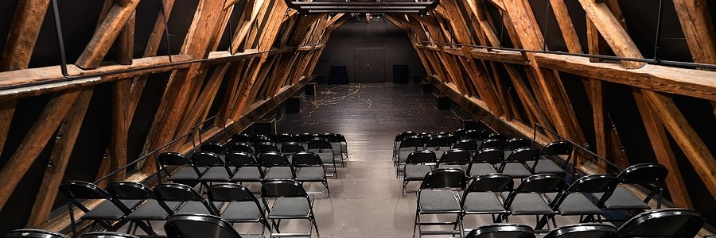
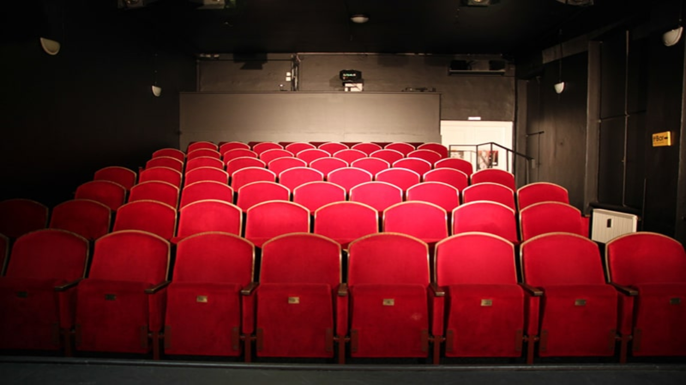
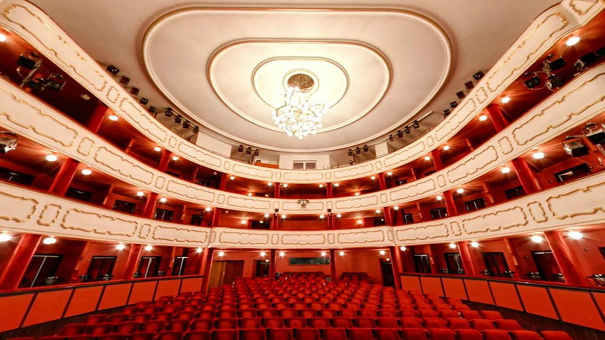

Tento web obsahuje informace a odkazy na známá Olomoucká divadla
dozvíte se zde základní informace o olomouckých divadlech
Na dalších stránkách najdete odkazy na stránky divadel
Cílem tohoto projektu je zviditelnit kulturní život v Olomouci a poskytnout návštěvníkům webu přehled o divadlech a jejich programech.